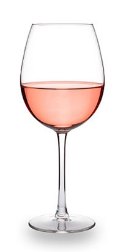

Rose wine

A rosé ([ʁoze]) is a type of wine that incorporates some of the color from the grape skins, but not enough to qualify it as a red wine. It may be the oldest known type of wine, as it is the most straightforward to make with the skin contact method. The pink color can range from a pale "onionskin" orange to a vivid near-purple, depending on the grape varieties used and winemaking techniques. Usually, the wine is labelled rosé in French, Portuguese, and English-speaking countries, rosado in Spanish, or rosato in Italian.
There are three major ways to produce rosé wine: skin contact, saignée, and blending. Rosé wines can be made still, semi-sparkling or sparkling and with a wide range of sweetness levels from highly dry Provençal rosé to sweet White Zinfandels and blushes. Rosé wines are made from a wide variety of grapes and can be found all around the globe.
When rosé wine is the primary product, it is produced with the skin contact method. Black-skinned grapes are crushed and the skins are allowed to remain in contact with the juice for a short period, typically two to twenty hours. The grape must is then pressed and the skins discarded, rather than left in contact throughout fermentation (as with red wine making). The longer the skins are left in contact with the juice, the more intense the color of the final wine.
When a winemaker desires to impart more tannin and color to red wine, some of the pink juice from the must can be removed at an early stage in what is known as the Saignée (from French bleeding) method. The red wine remaining in the vats is intensified as a result of the bleeding, because the volume of juice in the must is reduced, and the must involved in the maceration becomes more concentrated. The pink juice that is removed can be fermented separately to produce rosé.
The simple mixing of red wine into white wine to impart color is uncommon and is discouraged in most wine growing regions, especially in France, where it is forbidden by law, except for Champagne. Even in Champagne, several high-end producers do not use this method but rather the saignée method.
Winemaking methods
Rosés can be produced in a variety of ways with the most common method being early pressing of red grape varieties after a very short period, usually 12–24 hours, of skin-contact (maceration). During maceration, phenolics such as the anthocyanins and tannins that contribute to color as well as many flavor components are leached from the skins, seeds and any stems left in contact with the must. In addition to adding color and flavor, these phenolics also serve as antioxidants, protecting the wine from degradation of oxygen exposure. While red wines will often have maceration last several days to even several weeks, the very limited maceration of rosés means that these wines will have less stable color, potential flavor components and oxygen protection. This contributes to wines with shorter shelf-life that are meant to be consumed soon after release.
Saignée
The saignée (French: [sɛɲe]; French for "bleed") method is the practice of removing ("bleeding off") some of the juice from the must in order to more deeply concentrate the phenolics, color and flavor the red wine. It has a long history of use in the French wine regions of Bordeaux and Burgundy but wasn't always used for rosé production. For some red winemakers, the juice bleed off is simply poured down the drain or used as "topping wine" to fill the ullage (the headspace of barrels and tanks) during storage. Its use in rosé production is sometimes considered an afterthought, as a way to increase cash-flow by producing a second wine to a primary red wine that can be released much sooner and available to market. While many wineries have been able to produce critically acclaimed rosé using the saignée method, its use has provoked criticism from wine personalities such as François Millo, president of the Provence Wine Council (CIVP) who claim that saignée method rosés are “not true rosés" because the bleeding process (which is not pressed with the must) is more of an afterthought.
Vin gris
Unlike the maceration method which gives some, albeit very brief, time for the juice to be in contact with the skins vin gris are wines made from the immediate pressing of red skin grapes without any maceration time. Despite the name vin gris, the resulting juice is actually not grey but rather a very pale pink that is usually much lighter than traditionally made rosés using the limited maceration and saignée methods. Under French wine laws, wines labelled gris de gris must only be made from lightly tinted grape varieties such as Cinsault, Gamay and Grenache gris. The style is a specialty of the Lorraine Appellation d'Origine Contrôlée (AOC) Côtes de Toul made from Gamay and in Morocco where the orange-pink wine is made from a blend of Cinsault, Grenache and Cabernet Sauvignon.
Decolorization
Another method of producing rosé is to severely decolorize a red wine using absorbent charcoal such as activated carbon. This purer form of charcoal obtained by the dry distillation of carbon compounds (such as wood or peat) has a high ratio of surface area to weight that absorbs color compounds as well as other phenolics and colloids in a wine. While it can be used to decolorize a wine, often much more than just color is stripped from the wine which makes this method very rarely used in the production of quality rosés.